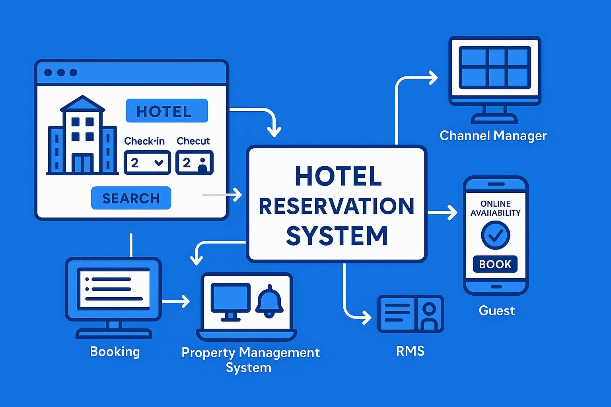

Illustration: AI-generated for EA Hospitality Pulse — synthetic image, not a photograph
Zanzibar's taxman is moving into the booking system. The levy is not the expensive part.
Zanzibar's revenue authority published an amendment to its Virtual Fiscal Management System regulations on 1 September requiring accommodation providers to run an approved property management system wired into the state's platform. Operators are being told the window closes in weeks, by their software vendors rather than by a public notice. The consequence that matters is not the tax rate, it is that occupancy and achieved rate become a government record before they are a management report.
On 2 October the Zanzibar Revenue Authority put a document on its website with a title no hotelier reads for pleasure: a revenue collection report for the first quarter of 2026/2027. The headline inside it was comfortable. Collections of TSh353.310 billion against a target of TSh351.106 billion, 100.63 per cent of plan, and 28.81 per cent above the TSh274.291 billion taken in the same quarter of 2025. Makame Khamis Moh'd, the authority's head of information, public relations and customer service, put the performance down to stronger economic activity, trade with the mainland, taxpayer education and the spread of the authority's electronic systems.
That last item is the one that should hold an operator's attention, because it is the only one a hotel can be made to pay for. The systems the authority named were its virtual fiscal receipting platform and its integrated domestic revenue administration system. Neither is a tax. Both are plumbing. And a month earlier, on 1 September, the authority had published the instrument that extends that plumbing into the place where a hotel keeps its most commercially sensitive information. The document is listed on the authority's own resources page under a flat administrative title, "Amendment of Virtual Fiscal Management System Regulations, 2026." It is the most consequential piece of paper to land on Zanzibar's hospitality industry this year, and almost nobody in the industry has read it, for a reason worth stating plainly: the file the authority has posted is a scanned image. It carries no machine-readable text. You cannot search it, you cannot copy a clause out of it, and you cannot paste it to a lawyer in Nairobi without retyping it first.
What the amendment does, according to every property management system vendor now selling against it, is require accommodation and related hospitality providers to operate a system approved by the Commissioner General and to integrate their application software with the authority's own. The vendors are also circulating a date. HotelPlus Africa's compliance page states a deadline of 1 November 2026, describes a sixty day compliance period running from a February notice, and dates the amendment as signed on 5 August, gazetted on 14 August and posted on 1 September. That is nineteen days away. It is also a date no reader can verify against a public notice, because the authority's notices listing, read this morning, carries no hotel-specific or property-system-specific notice at all. The five most recent items are the quarterly collection report of 2 October, the regulations amendment of 1 September, a notice on tax return filing procedures of 17 August, the Finance Act and Orders for 2026/2027 of 6 August, and a July recruitment notice.
So the operative timetable for a legal obligation on every hotel on the islands is currently being communicated to the industry by companies that sell the software required to comply with it. That is not a conspiracy. It is a governance gap, and it is the first thing an operator should be writing to the Zanzibar Association of Tourism Investors about this week, because a vendor's reading of a commencement date is not a defence.
The direction of travel, at least, has been visible since April. On 10 April the Acting Minister for Tourism and Heritage, Mudrik Ramadhan Soraga, told hoteliers and operators that the government and the revenue authority wanted property management systems in place for transparency and accuracy in revenue reporting. He was not oblique about the obligation underneath it. "All hotels must be registered and use electronic fiscal devices to issue receipts," he said, adding that failure to comply "will constitute a violation of the law" and that the government would act firmly against defaulters. His framing of the policy was a sentence no finance ministry anywhere would disown: "there must be a strong, transparent, and fair tax collection system." Registration was to be done before 24 April. Biubwa Omar of the Zanzibar Association of Tourism Investors made the industry's point in response, which was not that the system was wrong but that its success would depend on proper oversight.
Six weeks before that, the machine had already started turning. On 25 February The Citizen reported that 142 hotels had been linked to the digital system. For an island whose accommodation stock runs from large beachfront resorts with enterprise software already installed to guesthouses keeping a paper register behind the desk, 142 is a number that tells you which end of the market went first.
This is where the cost sits, and it is not the levy. A resort group running a mainstream international property management system will pay an integration fee and lose a fortnight of its revenue manager's attention. A twelve room guesthouse in Nungwi will buy software it has never needed, train staff who have never used any, and acquire a monthly licence against a revenue line that is seasonal and thin. The asymmetry is not incidental to the policy, it is the mechanism of the policy. A tax authority that wires the till is not primarily trying to raise the rate on compliant operators. It is trying to find the ones it cannot see, and the price of finding them is paid by everyone in the room, heaviest at the bottom.
The deeper consequence has almost nothing to do with tax at all, and it is the reason this matters to operators in Mombasa, Arusha and Entebbe who will never file a Zanzibari return. Once a property management system reports to the state at the point of sale, occupancy and achieved rate stop being management information and become a government record. They become a record that exists before the hotel's own month-end, that cannot be smoothed across a quarter, and that the hotel does not control the first copy of.
Consider what currently happens to the island's most quoted operating number. The Office of the Chief Government Statistician's release of 8 September reported 124,481 international arrivals in August and an estimated bed occupancy of 92.9 per cent. That estimate is built from visitors' declared intended stays against available bed spaces. It is a survey product, honestly labelled as one, and no hotel's books were consulted to produce it. A wired till produces a different kind of number, and the two will eventually disagree in public. When they do, the till wins, because it is a transaction record rather than an inference from an arrival card.
For the industry, that is a repricing event dressed as a compliance deadline, and it cuts three ways.
It changes what a lender can see. Every East African hospitality credit conversation in the last five years has turned on the same awkward moment, in which an owner presents management accounts and a bank quietly discounts them. A till reporting to the revenue authority creates, for the first time, an occupancy and rate series that a lender can treat as independently produced. Operators whose real trading is better than their declared trading will not enjoy the transition. Operators whose books have always been clean have just been handed the cheapest credibility they will ever buy, and should be the first to ask their bank what it is now willing to price against a verifiable series.
It changes the rate conversation with the platforms. An operator negotiating with an online travel agency currently argues from assertion, because neither side can prove what the hotel actually achieved. That changes when the achieved rate is a fiscal fact. It changes in both directions, which is the part worth sitting with: a platform that acquires any visibility, direct or inferred, into what a property genuinely nets is better placed to tell that property what its rate ought to be.
And it changes the feasibility study. Zanzibar's room pipeline has been underwritten on occupancy assumptions borrowed from survey estimates and operator self-reporting. If the wired figure lands materially below 92.9 per cent, and in a market with over a million available bed spaces in a month it very likely does, then every model built on the published estimate is optimistic by a margin nobody has yet measured. That correction will arrive quietly, in a credit committee, not in a press release.
Kenya is on the same road, from the opposite end. The Tourism (Amendment) Bill, National Assembly Bill No. 41 of 2026, had its first reading on 2 July and was still at that stage on the parliamentary tracker through the summer. Its argument is about who collects and who controls rather than about instrumentation. Appearing before the Departmental Committee on Tourism and Wildlife on 20 August, the Principal Secretary, Julius Bitok, reached for the revenue authority as his model, comparing the arrangement he wants to the working relationship between the Kenya Revenue Authority and the Central Bank, and arguing that "a transparent and efficient revenue flow would empower the Ministry" to plan and market the sector. The committee chairman, Kareke Mbiuki, the Maara MP, pressed for the two per cent levy to be extended to Airbnb and comparable short-term rental platforms, which he said had long held a competitive edge over licensed providers, while promising that "consensus-building is central to the process."
Both governments have reached the same conclusion from different directions. Kenya is arguing about the institution that collects. Zanzibar has skipped that argument and gone for the instrument, on the view that an authority which can read the transaction does not need to litigate the declaration. On current form, Zanzibar's approach will produce usable numbers years before Kenya's does, and Kenyan operators should expect the Nairobi version of this requirement to arrive as a schedule to something else, with less notice than they would like.
None of which is an argument against being measured. Licensed operators in all five markets have spent a decade complaining, with justification, that they compete against accommodation that pays neither levy nor tax, and the only instrument that has ever fixed that anywhere is enumeration at the point of sale. Europe needed a registration number and a platform reporting obligation to get there. Zanzibar has chosen the till.
The practical ask for an operator on the islands, in the next three weeks, is narrow and does not require a view on the policy. Establish in writing, from the authority rather than from a vendor, what the commencement date actually is and what approval of a property management system requires. Get the regulations in a readable form. Ask what data fields leave the property, where they are stored, and who else can see them, because a rate record held by a revenue authority is a rate record that a future regulation can oblige it to share. And price the software, the integration and the training into the 2027 budget now rather than in January, because the one certainty in this is that the cost of being counted has moved from the state's books to yours.
📣 Telegram 💬 WhatsApp 💼 LinkedIn 📚 All guides